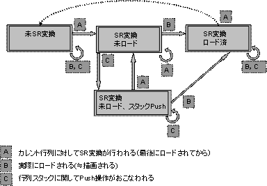

Renderer Matrix State
Renderer Matrix State Transition Diagram

Description
The renderer has an internal matrix stack. When the renderer carries out rendering with the 2D graphics engine, this internal stack takes care of the load processing to the matrix affine parameters. When rendering with the 2D graphics engine, the current matrix contents of the matrix stack are loaded to the OAM as affine parameters. The affine numbers need to be set up in the OAM attributes so the affine parameters are referenced.)
The renderer manages the matrix state to conserve affine parameters and attempts to decrease the number of loads.
The matrix states can be divided roughly into the following categories:
Not SR(scale, rotation) converted.
SR(scale, rotation) converted, not read.
SR(scale, rotation) converted, not read. The current matrix is pushed.
SR(scale, rotation) converted, read.
The matrix state supports events as shown in the diagram and changes.
See Also
None.
Revision History
12/06/2004 Initial version.